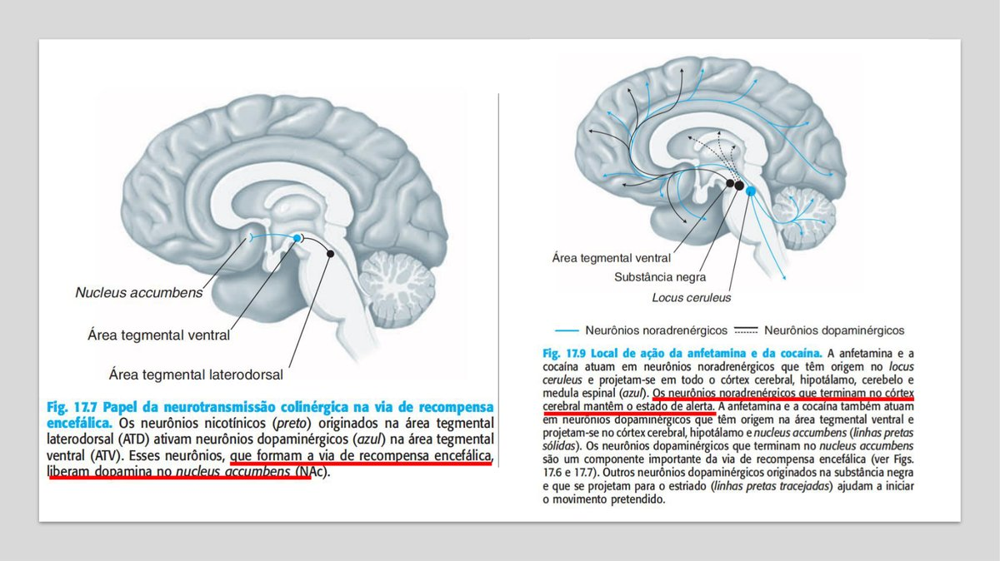
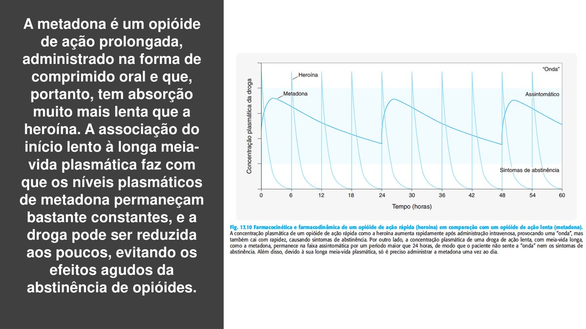
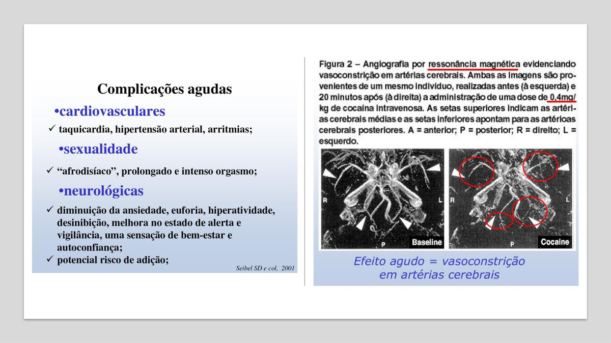
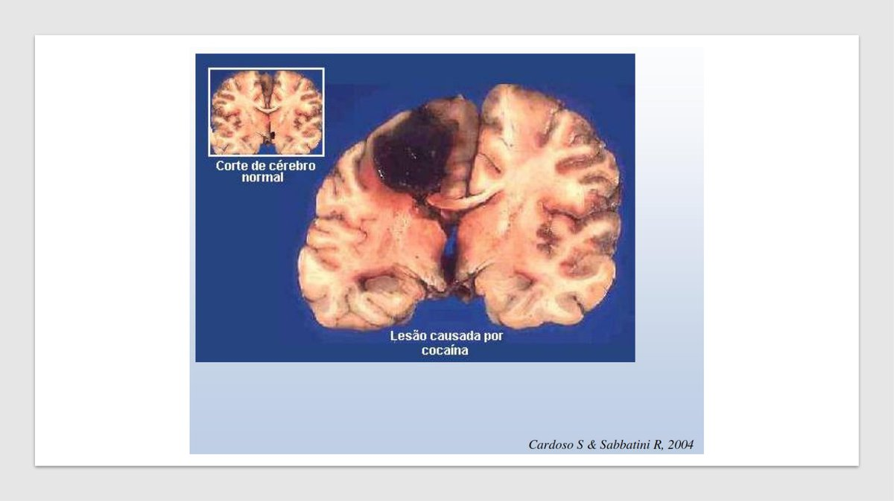
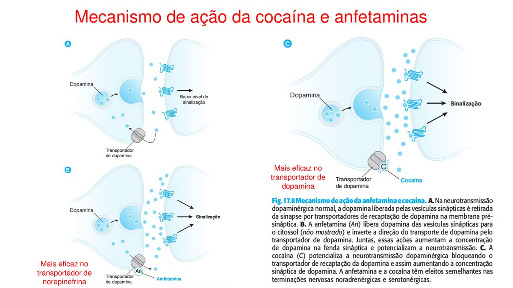
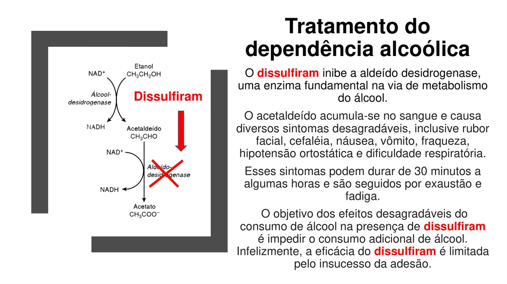
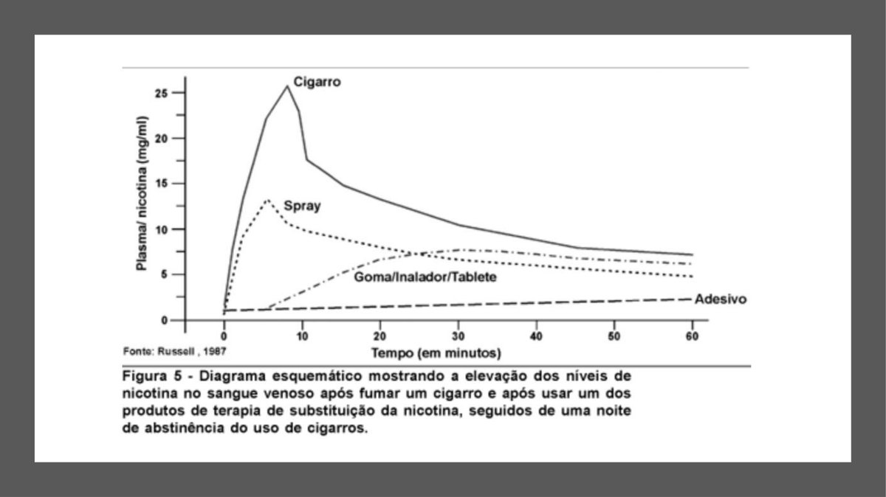
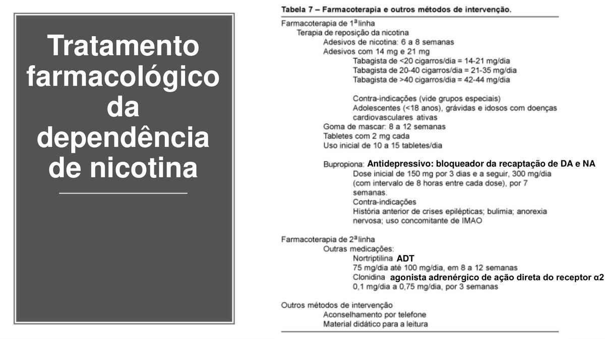
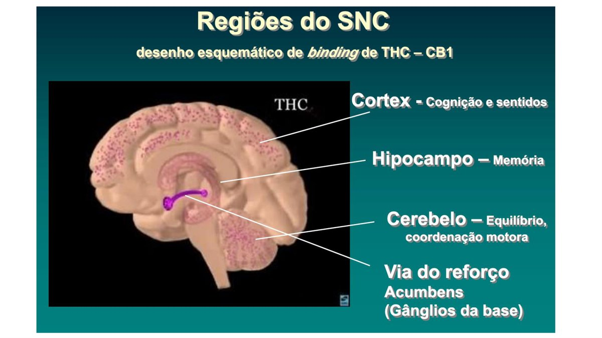

Córtex Estudos · 4º Semestre · Farmaco II · Aulas 04–05
Drogas Lícitas e Ilícitas
Farmacologia da dependência química: o que define uma droga psicotrópica, a via de recompensa que todas elas sequestram, e o par mecanismo→tratamento de cada classe — opioides (naloxona × metadona), cocaína e anfetaminas, álcool (GABA-A + NMDA, dissulfiram × acamprosato), nicotina (reposição + bupropiona), cannabis, inalantes e LSD.
1 · O que é droga: lícitas × ilícitas, a lei e a classificação
Antes de decorar mecanismos, entenda o mapa. Droga, na definição clássica (OMS), é qualquer substância não produzida pelo organismo que, introduzida nele, modifica seu funcionamento. É um guarda-chuva enorme — inclui remédio de pressão. O recorte que interessa aqui é o das drogas psicotrópicas: as que atuam no sistema nervoso central alterando o psiquismo (humor, percepção, comportamento) e que têm propriedade reforçadora — o efeito é sentido como prazeroso e "pede" repetição. É essa propriedade reforçadora que abre a porta da dependência.
- Lícitas — a lei permite produção, venda e consumo (com regras). Três grupos práticos: medicamentosas (benzodiazepínicos, anorexígenos/anfetaminas de receita, anabolizantes — legais COM prescrição, abuso quando usadas fora dela); sem finalidade terapêutica (álcool e tabaco — as duas drogas que mais matam no mundo, e são legais); e industriais (colas, solventes, combustíveis — vendidas para outro fim e desviadas para inalação).
- Ilícitas — produção, comércio e porte proibidos por lei. A lei de tóxicos clássica (Lei 6.368/76, base histórica da atual) criminaliza a cadeia inteira: plantar/cultivar, transportar, guardar ou entregar — e até instigar, induzir ou auxiliar alguém a usar é crime. Ou seja: "só estava segurando pro amigo" e "só chamei pra experimentar" também são condutas típicas.
Farmacologicamente, o que importa é o efeito predominante sobre o SNC:
Classificação farmacológica das psicotrópicas
- 1DEPRESSORAS — reduzem a atividade do SNC: álcool, opioides (morfina, heroína), benzodiazepínicos, inalantes/solventes.
- 2ESTIMULANTES — aumentam a atividade do SNC: cocaína/crack, anfetaminas, nicotina, cafeína.
- 3PERTURBADORAS — distorcem o funcionamento (percepção, tempo, memória) sem deprimir nem estimular de forma global: a maconha é o protótipo.
- 4ALUCINÓGENAS — produzem alucinações e ilusões sensoriais: LSD, psilocibina (cogumelos). Muitas classificações fundem perturbadoras + alucinógenas num grupo só.
⚠️ Lícita ≠ segura
A divisão lícita/ilícita é jurídica, não farmacológica. Álcool e tabaco (lícitas) matam mais gente que todas as ilícitas somadas; e um benzodiazepínico de farmácia vira droga de abuso na dose e no contexto errados. Na prova, não confunda o critério legal com o critério de perigo.
2 · Dependência, tolerância, fissura e a via de recompensa
Quatro conceitos sustentam a aula inteira — e as questões adoram trocá-los entre si:
- Dependência física: o organismo se adapta à presença contínua da droga (muda número de receptores, vias de sinalização) e passa a funcionar "normal" só COM ela. A prova da adaptação é a síndrome de abstinência: retirou a droga, o sistema adaptado fica desregulado e aparecem sinais e sintomas — em geral opostos ao efeito da droga (a abstinência é o "espelho").
- Tolerância: com o uso repetido, a mesma dose faz menos efeito — o usuário precisa escalar a dose. Pode ser farmacocinética (o álcool induz as próprias enzimas que o metabolizam) ou farmacodinâmica (down-regulation de receptores).
- Fissura (craving): o desejo compulsivo e incontrolável de usar. É o componente psíquico da dependência e o grande responsável pela recaída — meses depois de desintoxicado, um gatilho (lugar, cheiro, pessoa) dispara a fissura.
- Reforço: o efeito prazeroso que "ensina" o cérebro a repetir o comportamento.
O substrato anatômico do reforço é a via de recompensa (via mesolímbica): neurônios dopaminérgicos da área tegmental ventral (ATV), no mesencéfalo, projetam para o nucleus accumbens, no prosencéfalo. Ela existe para premiar com prazer o que garante sobrevivência — comer, beber água, sexo. Toda droga de abuso, por caminhos diferentes, converge para o mesmo final: aumentar a dopamina no nucleus accumbens. A droga "sequestra" o sistema e entrega uma recompensa maior e mais rápida que qualquer estímulo natural.

🎯 A lógica que resolve metade das questões
Decore o par efeito × abstinência = espelho. Droga depressora (álcool, opioide) → abstinência com hiperexcitação (tremor, convulsão, agitação). Droga estimulante (cocaína, nicotina) → abstinência com depressão, sonolência, humor rebaixado, bradicardia. Se a alternativa descrever abstinência "igual" ao efeito da droga, está errada.
3 · Opioides: mecanismo, heroína e fentanil
Os opioides (morfina, heroína, fentanil, metadona) agem em receptores próprios — μ (mu), κ (kappa) e δ (delta) — todos acoplados a proteína G inibitória (Gi). A ativação:
Mecanismo molecular do opioide (receptor μ)
- 1Inibe a adenilato ciclase — cai o AMPc dentro do neurônio.
- 2Abre canais de K⁺ — o potássio sai, o neurônio hiperpolariza e fica difícil de excitar.
- 3Fecha canais de Ca²⁺ — sem cálcio no terminal, cai a liberação de neurotransmissores.
- 4Resultado — neurônio desligado: analgesia, sedação, euforia (↑dopamina no accumbens por desinibição) e, na dose alta, depressão do centro respiratório.
- Heroína (diacetilmorfina): derivado mais lipossolúvel da morfina — atravessa a barreira hematoencefálica rápido e dá o "flash" (onda de euforia) que a morfina não dá. Vendida como pó, usada injetada, fumada ou aspirada. A overdose mata por depressão respiratória: o usuário simplesmente para de respirar.
- Complicações que não são do opioide em si: o pó de rua é "batizado" com aditivos insolúveis (talco, amido) que, injetados, geram microtrombos e embolias; e o compartilhamento de agulhas transmite HIV, hepatites B e C e endocardite. Questão clássica: usuário de droga injetável com febre + sopro novo = endocardite de câmaras direitas.
- Fentanil: opioide sintético ~100× mais potente que a morfina — miligramas matam. É o motor da crise americana de overdoses (misturado à heroína de rua sem o usuário saber). No Brasil o perfil é outro: o usuário típico de fentanil é o profissional de saúde (anestesistas, equipe de CC/UTI), porque é quem tem acesso à ampola.
4 · Naloxona × metadona: intoxicação × dependência
Aqui mora a pegadinha mais cobrada do bloco. São dois problemas diferentes com dois fármacos diferentes:
| NALOXONA (Narcan®) | METADONA | |
|---|---|---|
| O que é | Antagonista puro dos receptores opioides | Agonista μ (é um opioide!) |
| Via / cinética | IV, ação em minutos, meia-vida curta | Oral, meia-vida longa, nível estável |
| Indicação | Intoxicação AGUDA (overdose): reverte a depressão respiratória na hora | Tratamento da DEPENDÊNCIA (terapia de substituição) |
| Detalhe de prova | Em dependente, precipita abstinência aguda; meia-vida menor que a da heroína — pode precisar repetir a dose | 1×/dia, sem "onda" de euforia; depois desmame gradual |
Por que a metadona funciona? É farmacocinética pura. A heroína injetada sobe em pico ("onda" de prazer) e despenca em horas (abstinência + fissura) — o dia do dependente vira uma montanha-russa de picos e vales. A metadona oral, de meia-vida longa, mantém o nível plasmático quase constante: ocupa os receptores μ o suficiente para não haver abstinência, mas sem o pico que dá o barato. O usuário sai do ciclo, reorganiza a vida e depois reduz gradualmente. Existe ainda a naltrexona (antagonista oral de longa duração) para a manutenção: com os receptores bloqueados, usar heroína "não adianta" — ajuda a prevenir recaída no paciente já desintoxicado.

⚠️ Não confundir os três "NAL"
NALOXONA = IV, emergência, overdose. NALTREXONA = oral, manutenção da abstinência (opioides e também álcool). METADONA = agonista de substituição para tratar dependência. Alternativa que colocar "metadona na overdose" ou "naloxona para tratar dependência" está errada.
5 · Cocaína e crack
A cocaína (do arbusto Erythroxylum coca) é o estimulante clássico. Mecanismo: bloqueia os transportadores de recaptação das monoaminas — dopamina (principal), noradrenalina e serotonina. O neurotransmissor liberado na fenda não é recolhido de volta: acumula e continua estimulando o neurônio pós-sináptico. No accumbens isso significa dopamina em nível recorde = euforia intensa; na periferia, noradrenalina sobrando = taquicardia, hipertensão, midríase, vasoconstrição.
- Formas: pó aspirado (cloridrato) — absorção nasal, efeito em minutos; crack = base livre fumada — chega ao cérebro em segundos, pico altíssimo e curtíssimo, fissura brutal logo depois. Por isso o crack é a forma que mais escraviza: a recaída no crack chega a ~70% mesmo após tratamento.
- Overdose de cocaína NÃO tem antídoto. O tratamento é sintomático: benzodiazepínico para agitação/convulsão, controlar pressão, temperatura e arritmia. Compare com o opioide (que tem naloxona) — par de questão certo.
- Como mata: a vasoconstrição intensa fecha artérias — isquemia cerebral/AVC, IAM (coronária fechada em jovem sem aterosclerose!), arritmias, hipertermia. Angiografia feita ~20 minutos após uma dose IV já mostra o calibre das artérias cerebrais visivelmente reduzido.


6 · Anfetaminas e êxtase (MDMA)
As anfetaminas chegam ao mesmo resultado da cocaína — monoaminas acumuladas na fenda — por mecanismo molecular diferente. Em vez de bloquear o transportador por fora, a anfetamina entra no neurônio por ele, desloca a dopamina das vesículas e faz o transportador funcionar ao contrário: a bomba que deveria recaptar passa a bombear dopamina para fora. A cocaína age mais sobre o transportador de dopamina; a anfetamina, comparativamente, mexe mais com a noradrenalina — mas o quadro clínico é da mesma família (alerta, anorexia, taquicardia, hipertensão, euforia), variando potência e duração.

- Anfetaminas de farmácia: os anorexígenos clássicos — anfepramona (Dualid S®, Hipofagin®, Moderine®), femproporex (Lipomax®, Inobesin®), mazindol (Dasten®, Fagolipo®) — dominaram o emagrecimento por décadas e foram retirados/estritamente controlados pelo risco cardiovascular e de dependência. A metanfetamina (Pervitin® histórico) é a versão de rua mais potente. E o metilfenidato (Ritalina®) é uma anfetamina de uso legítimo no TDAH — hoje abusada como "droga de estudo".
- MDMA (êxtase): sintetizada pela Merck em 1914 como supressor de apetite — nunca chegou a ser comercializada para isso. Voltou como droga de balada: comprimidos coloridos com logotipos, R$ 80–100 a unidade. Predomina o efeito serotonérgico (empatia, euforia sensorial).
🩺 A cascata que mata na balada
Jovem em festa eletrônica, horas dançando, chega ao PS quente, rígido e com urina escura. É a sequência letal do êxtase: hipertermia maligna → rigidez/atividade muscular extrema → rabdomiólise → mioglobina entope o túbulo renal → insuficiência renal aguda → óbito. Conduta: resfriar agressivamente, hidratar, suporte. Grave a cadeia inteira — a prova pergunta qualquer elo dela.
🎯 "Droga sintética não some"
O professor insistiu num ponto de saúde pública: droga de laboratório (êxtase, K-drugs, "nova droga X") nunca desaparece do mercado — a síntese é barata e as "microcélulas" de produção (um químico, uma cozinha) são impossíveis de erradicar como se erradica uma plantação. Apreensão fecha uma cozinha; a receita continua no mundo.
7 · Álcool: mecanismo, metabolismo e ressaca
O álcool (etanol) é a droga lícita mais consumida do mundo — e um depressor do SNC, por mais que a festa comece "animada" (a euforia inicial é desinibição: o álcool deprime primeiro os freios corticais). Molécula pequena e solúvel em água e gordura, é absorvida por qualquer mucosa — boca, estômago, intestino (e até reto, nos relatos absurdos de "chuca" alcoólica).
- Mecanismo duplo: ① liga-se ao receptor GABA-A num sítio alostérico PRÓPRIO — não é o sítio do GABA nem o dos benzodiazepínicos — e potencializa a abertura do canal de cloreto (mais Cl⁻ entra, neurônio hiperpolariza, SNC deprime); ② inibe o receptor NMDA de glutamato, o grande excitatório. A frase da aula: "o álcool estimula quem inibe (GABA) e inibe quem estimula (glutamato)" — depressão por dois lados.
- Dependência e abstinência: com uso crônico, o sistema glutamatérgico cronicamente inibido responde com up-regulation dos receptores NMDA, e a via de recompensa recebe seu ↑dopamina. Quando o etílico para de beber, o glutamato "represado" encontra receptores a mais: hiperexcitação — tremor, sudorese, taquicardia, convulsões e delirium tremens. A abstinência alcoólica MATA, e por isso se trata (com benzodiazepínico — adiante).
- Metabolismo em dois passos hepáticos: etanol —álcool-desidrogenase→ ACETALDEÍDO —aldeído-desidrogenase→ acetato (vira acetil-CoA/energia). O acetaldeído é mais tóxico que o próprio etanol: é ele o grande culpado da ressaca (cefaleia, náusea, mal-estar) e da toxicidade crônica.
- Ressaca tem mais um sócio: o álcool inibe o ADH (hormônio antidiurético) — você urina muito mais do que bebeu e acorda desidratado. Por isso o "tratamento" da ressaca comum é prosaico: ÁGUA (e tempo para o acetaldeído ser depurado).
- Tolerância: o álcool é indutor enzimático — induz inclusive as enzimas que o metabolizam (auto-indução). O bebedor crônico "aguenta mais" em parte porque destrói o etanol mais rápido; e atenção às interações: o fígado induzido acelera o metabolismo de outros fármacos.
⚠️ Álcool + benzodiazepínico: 1 + 1 = 10
O benzodiazepínico sozinho é um fármaco seguro — há relatos de sobrevida com 20–40× a dose terapêutica, porque o BZD só modula o GABA-A (precisa do GABA endógeno para agir; efeito-teto). Mas álcool e BZD deprimem o mesmo canal por sítios diferentes, e a soma não é aritmética: é sinergismo ("1+1=10") — sedação profunda, coma e parada respiratória. O coquetel "rivotril com vodca" mata quem "só tomou o remédio de sempre".
8 · Tratamento do alcoolismo: dissulfiram × acamprosato
O tratamento farmacológico tem uma peça histórica e um esquema atual — e a prova adora contrastá-los.
- Dissulfiram (a peça histórica): inibe a aldeído-desidrogenase. O paciente pode até beber — mas o acetaldeído se acumula e provoca em minutos o efeito antabuse: rubor facial intenso, cefaleia latejante, náusea/vômito, palpitação, hipotensão. A lógica é aversiva: beber vira sofrimento. Na prática, baixa adesão (o paciente simplesmente para o comprimido no dia em que decide beber) e risco real na recaída — por isso não é mais o tratamento de escolha.
- O "dissulfiram natural": boa parte dos asiáticos tem deficiência genética de aldeído-desidrogenase — bebem e ficam vermelhos, taquicárdicos e enjoados ("asian flush"). É o fenótipo antabuse espontâneo, e essas populações têm menos alcoolismo. Mesma bioquímica, ótimo gancho de questão.
- Esquema atual: ① na abstinência aguda, benzodiazepínico (substitui o álcool no GABA-A, previne convulsão e delirium; depois desmama); ② para prevenir recaída, ACAMPROSATO — modula/acalma a hiperatividade glutamatérgica (NMDA) do cérebro do etílico abstinente, tirando o desconforto que leva de volta ao copo. Detalhe: só faz sentido depois que o paciente parou de beber; ③ naltrexona (o antagonista opioide!) reduz o prazer/recompensa de beber e também previne recaída — e em outra dupla famosa, naltrexona + bupropiona é usada na obesidade.

9 · Nicotina e o tratamento do tabagismo
A nicotina é agonista dos receptores nicotínicos de acetilcolina. Nos neurônios da ATV, essa ativação dispara a via de recompensa — dopamina no accumbens — e é por isso que um estimulante "leve" está entre as substâncias que mais geram dependência no planeta. Na fase aguda ela libera um coquetel de neurotransmissores (dopamina, noradrenalina, acetilcolina, serotonina): alerta, concentração, supressão do apetite, taquicardia. A abstinência é o espelho: irritabilidade, ansiedade, dificuldade de concentração, ganho de peso, bradicardia — e é ela que derruba quem tenta parar "no seco".
O tratamento de primeira linha tem dois pilares que podem ser combinados:
| Pilar | Como se usa | Contraindicações / detalhes |
|---|---|---|
| Reposição de nicotina — ADESIVO (a forma preferida) | 6–8 semanas, desmame progressivo. Dose pelo consumo: <20 cig/dia → 14–21 mg/dia · 20–40 cig/dia → 21–35 mg/dia · >40 cig/dia → 42–44 mg/dia | Menores de 18 anos, grávidas e idosos com doença cardiovascular ativa |
| Reposição — GOMA de mascar | 2 mg por tablete, ~10–15/dia conforme fissura, 8–12 semanas | Mastigação correta ("mastiga e estaciona"); problemas de ATM/dentário |
| Reposição — SPRAY nasal | Jatos conforme fissura | É a forma que mais imita os PICOS plasmáticos do cigarro (mais eficaz na fissura aguda, maior potencial de manter dependência) — caro, importado |
| BUPROPIONA | Bloqueia a recaptação de dopamina e noradrenalina (antidepressivo atípico — trata a "falta" que o cigarro deixava). Esquema: 150 mg/dia por 3 dias → 300 mg/dia (2× 150 mg, intervalo ≥8 h) | Convulsões/epilepsia (baixa o limiar!), bulimia, anorexia nervosa, uso de IMAO |
- Segunda linha: nortriptilina (tricíclico) 75–100 mg/dia por 8–12 semanas; clonidina (agonista α2) 0,1–0,75 mg/dia — ambas quando a primeira linha falha ou é contraindicada.
- A lógica da reposição: entregar nicotina sem a fumaça (que é o que carrega alcatrão, CO e os 4.000 tóxicos), em nível mais estável, e desmamar devagar — o mesmo raciocínio da metadona para a heroína.


10 · Cannabis e o sistema endocanabinoide
A Cannabis sativa contém cerca de 60 canabinoides; o principal psicoativo é o THC (Δ9-tetraidrocanabinol). Ele age em receptores próprios do corpo — a maconha só "funciona" porque temos um sistema endocanabinoide endógeno (anandamida etc.):
- CB1 — SNC: córtex (cognição), hipocampo (memória), cerebelo (coordenação), nucleus accumbens (reforço — de novo, ↑dopamina). CB2 — periferia/sistema imune. Ambos acoplados a Gi (↓AMPc), como o opioide.
- Efeito bifásico: a "onda" (euforia, riso fácil, distorção de tempo e percepção, fome) seguida do declínio (sonolência, lentificação). Há tolerância e síndrome de abstinência descritas — a ideia de que "maconha não vicia" é falsa.
- Riscos crônicos que o professor martelou: uso pesado/precoce associa-se a ~3× mais esquizofrenia e ~5× mais depressão — o cérebro adolescente é o mais vulnerável.
- Canabidiol (CBD): o canabinoide NÃO psicotomimético virou fármaco — epilepsias intratáveis da infância e transtorno do espectro autista — mas os extratos reais sempre carregam algum THC; prescrição regulada.
- K-drugs (canabinoides sintéticos, K2/K4/K9): agonistas CB1 sintéticos, muito mais potentes, borrifados em ervas ou impregnados em folhas de papel/cartas — a via de entrada clássica nos presídios, que explodiu na pandemia. Toxicidade imprevisível.
- Rimonabanto, a lição farmacológica: se o CB1 dá fome e recompensa, um antagonista CB1 deveria emagrecer — e emagrecia. Foi lançado para obesidade e retirado do mercado por depressão e suicídio: bloquear o sistema de recompensa endógeno tira o prazer de viver. O fracasso do fármaco foi o que consolidou o estudo dos endocanabinoides.

🩺 Geografia de prova (e de jornal)
O "polígono da maconha" fica no sertão do São Francisco — norte da Bahia / sul de Pernambuco; e o Paraguai é o grande produtor que abastece o Cone Sul. Curiosidade que o professor usou para mostrar a escala do problema — pode aparecer como contextualização de vinheta.
11 · Inalantes, LSD e psilocibina
- Inalantes/solventes (cola de sapateiro, tíner, esmalte, gasolina, lança-perfume = éter + clorofórmio, gás de cozinha): depressores do SNC de ação rapidíssima. O quadro passa por uma fase de excitação inicial (euforia, desinibição — as fases de Guedel dos anestésicos inalatórios) antes da depressão. Droga de criança e adolescente de rua (barata, legal de comprar). Mata por deslocamento do oxigênio (o vapor ocupa o alvéolo — asfixia/sufocação) e por arritmias; cronicamente lesa cérebro, fígado e rins. O gás de cozinha é inodoro — o cheiro é um odorizante artificial adicionado justamente para denunciar vazamento.
- LSD: alucinógeno serotonérgico (agonista 5-HT2A), ativo em microgramas ("selos"). Organicamente é considerada a menos danosa das ilícitas (não há overdose letal descrita típica) — o perigo é comportamental (acidentes durante a "viagem") e psiquiátrico: flashbacks, revivências da alucinação anos depois, descritos inclusive desencadeados por fluoxetina/ISRS (mexer na serotonina reacende o circuito).
- Psilocibina (cogumelos): alucinógeno serotonérgico "natural"; no Brasil vive num limbo legal (a lei lista a substância, não o cogumelo/esporos à venda) — mas limbo legal ≠ segurança: não há dose segura estabelecida, e a pesquisa terapêutica (depressão resistente) é feita em ambiente controlado, o que não valida o uso recreativo.
🎯 Os casos que o professor contou (e que viram vinheta fácil)
Anorexígenos manipulados: o próprio professor, na época da faculdade, tomou fórmula de emagrecimento manipulada — anfetamina para "segurar o dia" + diazepam para conseguir dormir: o ciclo estimulante-depressor clássico das fórmulas de manipulação. Anabolizantes: atrofia testicular do usuário de esteroide androgênico (feedback negativo no eixo — o testículo "desliga"). Cigarro: o enfisema que acompanhou um colega professor até o fim. Três lembretes de que "droga lícita/medicamentosa" também cobra a conta.
✅ Resumo rápido das aulas
- Todas as drogas de abuso convergem para ↑dopamina na via ATV → nucleus accumbens; abstinência = espelho do efeito.
- Opioide: Gi → ↓AMPc, abre K⁺, fecha Ca²⁺; overdose mata por depressão respiratória → NALOXONA; dependência → METADONA VO meia-vida longa (sem "onda"); fentanil 100× morfina (no BR: profissional de saúde).
- Cocaína bloqueia a recaptação; anfetamina inverte o transportador — mesmo final. Overdose de cocaína: SEM antídoto, tratamento sintomático; mata por vasoconstrição (AVC/IAM). Êxtase: hipertermia → rabdomiólise → IRA.
- Álcool: sítio alostérico próprio no GABA-A + inibe NMDA ("estimula quem inibe, inibe quem estimula"); acetaldeído = ressaca; ressaca trata com água; álcool+BZD = sinergismo letal; abstinência trata com BZD; dissulfiram (inibe aldeído-DH, antabuse, obsoleto) × acamprosato (modula glutamato, previne recaída).
- Nicotina: agonista nicotínico → DA no accumbens; 1ª linha adesivo (14–21 / 21–35 / 42–44 mg conforme <20 / 20–40 / >40 cig/dia) + bupropiona 150→300 mg (CI: epilepsia, bulimia/anorexia, IMAO); 2ª linha nortriptilina, clonidina.
- Cannabis: THC em CB1/CB2 (Gi); ↑3× esquizofrenia, ↑5× depressão; CBD terapêutico (epilepsia, TEA); rimonabanto retirado (depressão/suicídio).
- Inalantes: depressores, matam por deslocamento de O₂; LSD: serotonérgico, flashbacks (até com ISRS); psilocibina sem dose segura.
Fontes: transcrição integral das aulas 04–05 + slides da disciplina; Rang & Dale, Farmacologia; Cecil, Tratado de Medicina Interna.
💊 Resumão Pré-Prova — Drogas Lícitas e Ilícitas
Revisão da véspera · Farmaco II · Aulas 04–05 · só o que foi enfatizado
- Droga (OMS): substância não produzida pelo organismo que modifica seu funcionamento. Psicotrópica: age no SNC alterando o psiquismo + propriedade REFORÇADORA.
- Lícitas: medicamentosas (BZD, anorexígenos, anabolizantes) · sem fim terapêutico (álcool, tabaco) · industriais (colas, solventes). Lícita ≠ segura — critério é jurídico.
- Lei 6.368/76: plantar, transportar/guardar/entregar E instigar/induzir/auxiliar a usar = crime.
- Classificação: DEPRESSORAS (álcool, opioides, BZD, inalantes) · ESTIMULANTES (cocaína, anfetaminas, nicotina) · PERTURBADORAS (maconha) · ALUCINÓGENAS (LSD, psilocibina).
- Via de recompensa: ATV → nucleus accumbens, DOPAMINA. Toda droga de abuso converge pra cá.
- Abstinência = ESPELHO do efeito. Depressora → abstinência excitada; estimulante → abstinência deprimida.
- Fissura (craving) = desejo compulsivo, componente psíquico, motor da RECAÍDA.
- Mecanismo (μ/κ/δ, todos Gi): ↓AMPc + ABRE K⁺ (hiperpolariza) + FECHA Ca²⁺ (↓liberação de NT). Overdose mata por depressão respiratória.
- Heroína: diacetilmorfina, mais lipossolúvel → "flash". Complicações do pó de rua: microtrombos/embolia (talco) + HIV/hepatites/endocardite (agulha).
- Fentanil: ~100× a morfina; usuário típico no Brasil = PROFISSIONAL DE SAÚDE (acesso).
| Naloxona (Narcan) | Metadona | Naltrexona | |
|---|---|---|---|
| É | ANTAGONISTA puro IV | AGONISTA μ oral, t½ LONGA | Antagonista ORAL longo |
| Para | INTOXICAÇÃO AGUDA (overdose) | TRATAR DEPENDÊNCIA (substituição, 1×/dia, sem "onda") | Manutenção pós-desintoxicação (opioide E álcool) |
- Cocaína BLOQUEIA os transportadores de recaptação (DA > NA, 5-HT) → NT acumula na fenda.
- Anfetamina INVERTE o transportador (entra por ele, esvazia vesículas, bomba trabalha ao contrário) → mesmo final; age mais em NA.
- Overdose de cocaína: SEM antídoto → tratamento SINTOMÁTICO (BZD, controlar PA/temperatura). Mata por VASOCONSTRIÇÃO → isquemia cerebral/AVC, IAM em jovem, arritmia.
- Crack: fumado, chega em segundos, fissura brutal, recaída ~70%.
- Anorexígenos: anfepramona (Dualid/Hipofagin/Moderine), femproporex (Lipomax/Inobesin), mazindol (Dasten/Fagolipo), metanfetamina (Pervitin), metilfenidato (RITALINA — TDAH).
- MDMA/êxtase: Merck 1914 (supressor de apetite NUNCA comercializado); serotonérgico; cascata letal: HIPERTERMIA → rigidez → RABDOMIÓLISE → mioglobina → IRA → morte. Sintética "nunca some" (microcélulas).
- Mecanismo duplo: sítio alostérico PRÓPRIO no GABA-A (≠GABA, ≠BZD) → ↑Cl⁻ + INIBE NMDA. "Estimula quem inibe e inibe quem estimula."
- Absorção por QUALQUER mucosa. Indutor enzimático (auto-indução → tolerância metabólica).
- Metabolismo: etanol →(álcool-DH)→ ACETALDEÍDO (mais tóxico; = RESSACA) →(aldeído-DH)→ acetato.
- Ressaca: acetaldeído + inibição do ADH → desidratação. Tratamento: ÁGUA.
- Álcool + BZD = "1+1=10" (sítios diferentes no mesmo canal, sinergismo letal). BZD sozinho: seguro até 20–40× a dose.
- Abstinência (up-regulation de NMDA): tremor → convulsão → delirium tremens. Trata com BZD.
- Dissulfiram: inibe ALDEÍDO-DH → efeito antabuse (rubor, cefaleia, náusea, hipotensão). Baixa adesão → não é mais escolha. Asiáticos = deficiência genética da mesma enzima.
- Acamprosato: modula a hiperatividade do GLUTAMATO → previne recaída; só APÓS parar de beber. + Naltrexona (↓recompensa; com bupropiona = obesidade).
| 1ª linha | Esquema | CI / detalhe |
|---|---|---|
| ADESIVO (preferido) | 6–8 sem · <20 cig/dia: 14–21 mg · 20–40: 21–35 mg · >40: 42–44 mg/dia | <18 anos, GRÁVIDAS, idoso com DCV ativa |
| Goma | 2 mg, ~10–15/dia, 8–12 sem | mastigar e "estacionar" |
| Spray nasal | conforme fissura | o que MAIS IMITA OS PICOS do cigarro; caro |
| BUPROPIONA | 150 mg 3 dias → 300 mg/dia (2×150, ≥8 h) | epilepsia/convulsão, bulimia, anorexia, IMAO |
- Mecanismo: agonista NICOTÍNICO → ATV → dopamina no accumbens. Bupropiona: bloqueia recaptação de DA + NA.
- 2ª linha: nortriptilina 75–100 mg/dia · clonidina (α2) 0,1–0,75 mg/dia.
- Abstinência-espelho: irritabilidade, ansiedade, GANHO DE PESO, bradicardia.
- ~60 canabinoides; psicoativo = THC (Δ9). Receptores CB1 (SNC: córtex-cognição, hipocampo-memória, cerebelo-coordenação, accumbens-reforço) e CB2 (imune) — ambos Gi, ↓AMPc.
- Tem tolerância E abstinência — "não vicia" é mito. Fases: onda → declínio.
- Riscos: ↑~3× ESQUIZOFRENIA · ↑~5× DEPRESSÃO (uso pesado/precoce).
- Canabidiol (CBD): terapêutico — epilepsia intratável, TEA; extrato sempre carrega THC.
- K-drugs: agonistas CB1 sintéticos, cartas impregnadas (presídios/pandemia), toxicidade imprevisível.
- Rimonabanto: ANTAGONISTA CB1 antiobesidade → retirado por DEPRESSÃO/SUICÍDIO; consolidou o estudo dos endocanabinoides.
- Geografia: polígono da maconha (norte BA/sul PE); Paraguai = grande produtor.
- Inalantes (cola, lança-perfume = éter+clorofórmio, gás de cozinha): DEPRESSORES com fase de excitação inicial (Guedel). Matam por DESLOCAMENTO DO O₂ + arritmia; lesam cérebro/fígado/rins. Droga de criança/adolescente de rua. Gás de cozinha: cheiro = odorizante artificial.
- LSD: serotonérgico (5-HT2A), microgramas; organicamente a "menos danosa"; perigo = comportamento na viagem + FLASHBACKS anos depois (até com fluoxetina/ISRS).
- Psilocibina: limbo legal no Brasil ≠ segura — sem dose segura estabelecida.
- Naloxona × metadona: overdose AGUDA × tratamento da DEPENDÊNCIA. (E naltrexona = manutenção oral.)
- Cocaína × anfetamina: BLOQUEIA × INVERTE o transportador — final igual (↑monoaminas).
- Overdose opioide TEM antídoto (naloxona); de cocaína NÃO TEM (sintomático).
- Dissulfiram × acamprosato: aversivo (acetaldeído/antabuse) × anti-recaída (modula glutamato).
- Sítio do álcool ≠ sítio do BZD ≠ sítio do GABA — três sítios no MESMO GABA-A (por isso o sinergismo).
- Acetaldeído (ressaca) ≠ acetato (produto final inócuo).
- CBD terapêutico ≠ THC psicoativo — mesmo vegetal, papéis opostos.
- Espelho: nicotina estimula → abstinência com GANHO de peso e BRADIcardia (não o contrário).
Banco de Questões — Drogas Lícitas e Ilícitas
Farmaco II · Aulas 04–05 · estilo ENADE/residência.